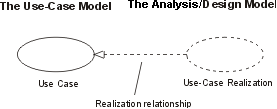

| Рекомендация: Реализация прецедента |
 |
|
| Связанные элементы |
|---|
ВведениеРеализация варианта использования представляет, каким образом вариант использования реализуется в терминах взаимодействующих объектов. Этот артефакт может принимать различные формы. Он может включать, например, текстовое описание (документ), диаграммы классов для классов или подсистем обработки и диаграммы взаимодействий (диаграммы соединения и последовательности), которые иллюстрируют поток взаимодействий между экземплярами классов и подсистем. В модели реализация варианта использования представляется как кооперация UML, которая группирует диаграммы и другую информацию (такую как текстовые описания), образующую часть реализации варианта использования. Причина отделения реализации варианта использования от самого варианта использования состоит в том, что это позволяет управлять вариантами использования независимо от их реализаций. Это особенно важно для больших проектов или семейств систем, когда в разных продуктах внутри семейства одни и те же варианты использования могут проектироваться по-разному. Например, в случае телефонных коммутаторов существует множество общих вариантов использования, однако все они спроектированы и реализованы по-разному в зависимости от расположения продукта, его производительности и цены. В случае больших проектов отделение варианта использования от его реализации позволяет вносить изменения в проект варианта использования, не затрагивая при этом сам вариант использования в контрольной версии. Для каждого варианта использования из модели вариантов использования существует реализация в аналитической модели или модели проектирования с отношением реализации, указывающим на вариант использования. В UML это отношение в виде прерывистой стрелки, конец которой напоминает отношение обобщения, указывая на то, что реализация представляет собой вид наследования и вид зависимости (то есть она может быть показана как стереотипная зависимость с тегом <<realize>>).  Реализацию варианта использования в модели анализа и проектирования можно связать с вариантом использования в модели вариантов использования. Диаграммы классов, принадлежащие реализации варианта использованияДля каждой реализации варианта использования может существовать одна иди несколько диаграмм классов, изображающих ее классы обработки. На приведенном ниже рисунке показана диаграмма классов для реализации варианта использования Принять предмет, помещенный в автомат. Класс и его объекты часто входят в состав нескольких реализаций варианта использования. Во время проектирования важно скоординировать все требования к классу и его объектам, которые могут существовать для различных реализаций варианта использования.
Вариант использования Принять предмет, помещенный в автомат и его диаграмма классов. Диаграммы соединения и последовательности, принадлежащие реализации варианта использованияДля каждой реализации варианта использования существует одна или несколько диаграмм взаимодействия, изображающих участвующие в ней объекты и их взаимодействия. Есть два типа диаграмм взаимодействия: диаграммы последовательности и диаграммы соединения. Они показывают одинаковую информацию, но разными способами. Диаграммы последовательности показывают явную последовательность сообщений, и их лучше использовать в том случае, когда важно визуализировать временную последовательность сообщений, тогда как на диаграммах соединения показаны дуги соединений между объектами и они информативней с точки зрения понимания эффектов, оказывающих влияние на данный объект, и для проектирования алгоритма. За дополнительной информацией обратитесь к разделам Прием: Диаграмма последовательности и Прием: Диаграмма соединения ниже. |

© Copyright IBM Corp. 1987, 2006. Все права защищены.. |